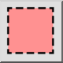
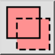
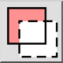
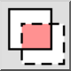

Alati za odabir
Alatna traka / Ikona:

Prečac: W, S
Naredbe: selectionmenu
Alatna traka / Ikona:

Prečac: W, S
Naredbe: selectionmenu
Neki alati za odabir mogu se upotrebljavati u načinu križnog odabira. U tom načinu odabiru se ne samo entiteti koji su potpuno unutar zadanog područja, već i entiteti koji su samo djelomično unutar područja. Taj se odabir također naziva „križni odabir”.
Neki alati za odabir omogućuju odabir načina odabira u alatnoj traci opcija. Dostupni načini odabira su:



